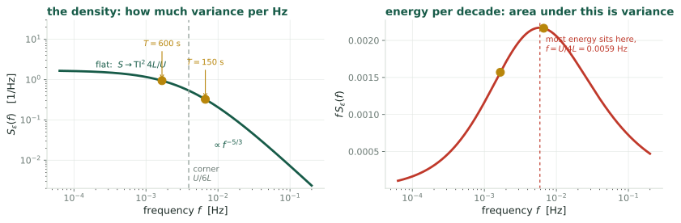
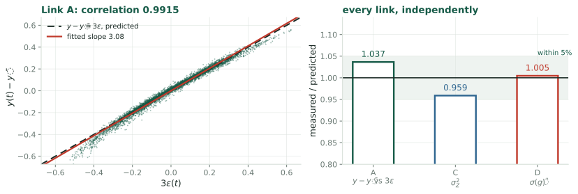
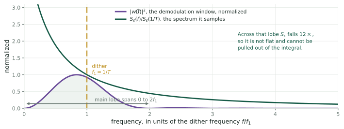
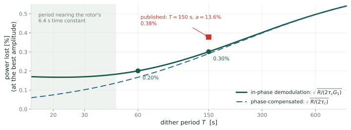

From the spectrum of the wind to the power extremum seeking loses, and the design that loses least
Robot Control Lab · Systems Engineering · UT Dallas
Rotea’s group maximizes the power of a turbine below rated wind speed by extremum seeking [R17], [CLR19], [KR22]:
What it leaves open. The wind is random, so \(\hat g\) scatters, the gain scatters about \(u^\star\) with it, and that costs power. The scatter has been measured in simulation, never predicted, so \(T\), \(a\) and the step have no rule. This deck predicts the scatter from the measured spectrum of atmospheric turbulence and chooses the \(T\), \(a\) and step that lose the least power.
| part | goal | result (NREL 5 MW, \(8\) m/s, turbulence intensity \(10\%\)) |
|---|---|---|
| Links A, B | reduce the wind’s effect on \(\hat g\) to one integral of the relative wind fluctuation | the noise in \(\hat g\) is linear in the wind |
| Links C, D | the variance of that integral, from the spectrum of turbulence | the scatter of \(\hat g\), within \(1.2\%\) of simulation, with no fitted parameter |
| The closed loop | the noise that a loop settling over many periods actually averages | the wind’s spectral density at the dither frequency, and nothing else |
| Design | the power lost as a function of \(T\), \(a\) and the tracking time, and its minimum | at a tracking time of one day, \(T = 60\) s and \(a = 9\%\) of \(u^\star\) lose \(0.20\%\) of the power; the published design loses \(0.38\%\) |
The same analysis accounts for the scatter reported in [CLR19], and it supplies the one number that a least-squares gradient estimator needs in order to report its own error bars (companion deck Least Squares for the Gradient).
Goal. Show that at the optimum the wind enters log-power through a single term, three times the relative wind fluctuation. Why. The noise in \(\hat g\) then depends on the wind through one random process, whose spectrum is measured.
A wind turbine below rated wind speed. Write \(\bar V\) for the mean wind speed, \(R\) for the rotor radius, \(\Omega\) for the rotor angular speed, \(\rho\) for air density and \(A = \pi R^2\) for the swept area. Define the tip-speed ratio and the power coefficient:
\[\lambda := \frac{R\Omega}{V}, \qquad P = \tfrac12\rho A V^3\,C_P(\lambda)\]
\(C_P\) is a property of the blades. For the rotor studied here it has a single maximum \(C_P^{\max}\) at \(\lambda = \lambda^\star\) (the curve’s origin: A.0b). The controller’s only actuator is the torque gain \(u\) in the generator-torque law \(\tau_g = u\Omega^2\); setting \(\dot\Omega = 0\) makes the rotor rest where \(C_P(\lambda)/\lambda^3 = c\,u\) for a rotor constant \(c\) (derived in Appendix A.0), so \(u\) selects an equilibrium \(\lambda_{\text{eq}}(u)\).
Define the objective \(J(u) := \ln C_P\big(\lambda_{\text{eq}}(u)\big)\), and write \(J'\), \(J''\) for its first two derivatives in \(u\). The optimum \(u^\star\) is where \(J'(u^\star) = 0\), equivalently \(\lambda_{\text{eq}}(u^\star) = \lambda^\star\). Numerically, for the NREL 5 MW rotor at \(\bar V = 8\) m/s, \(J'' = -1.41\times10^{-13}\) in SI units.
Split the wind into a mean and a fluctuation about it:
\[V(t) = \bar V\big(1 + \varepsilon(t)\big), \qquad \varepsilon(t) := \frac{\tilde v(t)}{\bar V}, \qquad \mathrm{TI} := \frac{\sigma_{\tilde v}}{\bar V} = \sigma_\varepsilon\]
\(\tilde v\) is the fluctuating part in m/s, \(\varepsilon\) its dimensionless counterpart, and \(\mathrm{TI}\) the turbulence intensity, \(0.10\) in the case studied here. For a random variable \(x\), \(\sigma_x := \sqrt{\mathbb{E}[x^2] - (\mathbb{E}[x])^2}\) is its standard deviation, written \(\sigma(x)\) when \(x\) is a compound expression. For a process \(x(t)\) it is evaluated at a fixed \(t\); the assumption that makes it independent of \(t\) is stated on Link A, standing assumptions. Since \(\bar V := \mathbb{E}[V]\), both \(\tilde v\) and \(\varepsilon\) have mean zero, so \(\sigma_{\tilde v}^2 = \mathbb{E}[\tilde v^2]\) and \(\sigma_\varepsilon^2 = \mathbb{E}[\varepsilon^2]\).
Remark. The standard form is additive, \(V = \bar V + \tilde v\), with the statistics written for \(\tilde v\) [IEC]. Dividing by the constant \(\bar V\) gives the form above: \(\varepsilon = \tilde v/\bar V\) and \(\sigma_\varepsilon = \sigma_{\tilde v}/\bar V = \mathrm{TI}\).
\(\sigma_\varepsilon = 0.10\), so terms of second order in \(\varepsilon\) have typical size \(\sigma_\varepsilon^2 = 0.01\) against \(\sigma_\varepsilon = 0.10\) at first order. From here on the wind enters only through \(\varepsilon\).
From the definitions, \(y = \ln P = \ln(\tfrac12\rho A) + 3\ln V + \ln C_P(\lambda)\). Substituting \(V = \bar V(1+\varepsilon)\) into the middle term, the logarithm of the product splits, and \(\ln(1+\varepsilon) = \varepsilon - \tfrac12\varepsilon^2 + O(\varepsilon^3)\) for \(|\varepsilon| < 1\):
\[3\ln V = 3\ln\bar V + 3\ln(1+\varepsilon) = \underbrace{3\ln\bar V}_{\text{constant}} + 3\varepsilon \;\underbrace{-\;\tfrac32\varepsilon^2 + O(\varepsilon^3)}_{\text{second order}}\]
The second-order part has typical size \(\tfrac32\sigma_\varepsilon^2 = 0.015\), against \(3\sigma_\varepsilon = 0.30\) for the linear term \(3\varepsilon\).
The third term, \(\ln C_P(\lambda)\), also depends on the wind, through \(\lambda = R\Omega/V\). Both wind-dependent terms are expanded under four standing assumptions, stated on the next slide; the third term is then handled on the slide after.
In force through Links A and B.
Under 1 to 4, \(V(t) = \bar V(1+\varepsilon(t))\), \(\Omega(t)\), hence \(\lambda(t) = R\Omega(t)/V(t)\) and \(y(t)\), are obtained from the wind path up to \(t\) by rules that do not change with \(t\). Assumption 2 then gives each of them the same law at every \(t\), so \(\mathbb{E}[\lambda(t)]\) and \(\mathbb{E}[y(t)]\) are constants.
With \(u\) fixed, \(\lambda(t)\) fluctuates only because the wind does. Write \(\bar\lambda := \mathbb{E}[\lambda(t)]\), a constant by the previous slide, and \(\delta\lambda := \lambda - \bar\lambda\). Two limits of the rotor’s response bracket \(\delta\lambda\):
In both, and in between, \(\delta\lambda = O(\varepsilon)\). Expanding about \(\bar\lambda\):
\[\ln C_P(\bar\lambda + \delta\lambda) = \ln C_P(\bar\lambda) + \frac{C_P'(\bar\lambda)}{C_P(\bar\lambda)}\,\delta\lambda + O(\delta\lambda^2)\]
The next slide evaluates the two terms of this expansion at the optimum. Away from it, \(C_P'(\bar\lambda)\) is a fixed nonzero number, \(\delta\lambda = O(\varepsilon)\), and their product, the linear term, is \(O(\varepsilon)\): a fluctuation of the same order as \(3\varepsilon\), with a coefficient set by how far off the gain sits.
At the optimum, \(u = u^\star\) (What we need from the turbine), so \(\lambda_{\text{eq}}(u) = \lambda^\star\), and \(d := \bar\lambda - \lambda^\star\) is a number with \(d = O(\sigma_\varepsilon^2)\) (A.0d). Three steps.
Collecting the three terms of \(y\) from Link A, executed:
\[y = \underbrace{\ln(\tfrac12\rho A) + 3\ln\bar V + \ln C_P(\bar\lambda)}_{\text{constant}} \;+\; 3\varepsilon(t) \;+\; r(t), \qquad r := -\tfrac32\varepsilon^2 + O(\varepsilon^3) + O(\sigma_\varepsilon^2\,\varepsilon) + O(\delta\lambda^2)\]
\(\mathbb{E}[3\varepsilon] = 0\), so \(\mathbb{E}[y]\) is the constant plus \(\mathbb{E}[r]\), and \[y(t) - \mathbb{E}[y] = 3\varepsilon(t) + \big(r(t) - \mathbb{E}[r]\big)\] Every piece of \(r\) is a product of at least two factors of size \(\sigma_\varepsilon\), so \(\sigma(r - \mathbb{E}r) = O(\sigma_\varepsilon^2) \approx 0.01\) against \(\sigma(3\varepsilon) = 3\sigma_\varepsilon = 0.30\). This is what \(y - \mathbb{E}[y] = 3\varepsilon + O(\varepsilon^2)\) means wherever it is quoted below: one term, one random process.
Goal. Write the noise in \(\hat g\) as one integral of \(\varepsilon\) against the dither. Why. The variance of such an integral follows from \(\varepsilon\)’s spectrum, which is Link C.
Extremum seeking perturbs the gain with a sinusoid of amplitude \(a\) and period \(T\). Time is cut into dither periods \([nT,(n+1)T)\), \(n = 0,1,2,\dots\); \(u_n\) is the gain about which the \(n\)-th period dithers, and the measured log-power is correlated against the sinusoid over exactly that period (written below with the period’s own clock, \(t \in [0,T]\)):
\[u(t) = u_n + a\sin\omega t, \qquad \omega := \frac{2\pi}{T}, \qquad f_1 := \frac{1}{T} = \frac{\omega}{2\pi}\]
\(\omega\) is the dither’s angular frequency (rad/s) and \(f_1\) the dither frequency in hertz; both are fixed numbers throughout, \(f_1 = 6.7\times10^{-3}\) Hz at \(T = 150\) s.
\[y(t) := \ln P(t), \qquad \hat g_n := \frac{1}{T}\int_0^T y(t)\,\frac{2}{a}\sin\omega t\;dt\]
Why that integral is a gradient estimate, and why the factor is \(2/a\), is Appendix A.1.
\(\hat g_n\) is an estimate of \(J'(u_n)\). Its mean error is the finite-amplitude bias \(\tfrac{a^2}{8}J'''\), derived on The bias grows as \(a^2\); its scatter, which is what this deck computes, comes entirely from the wind. Published values for the NREL 5 MW case [CLR19]: \(T = 150\) s and \(a = 13.6\%\) of \(u^\star\).
Write the log-power over one period as three parts. \(y_0(t)\) is its value with \(\varepsilon \equiv 0\), a deterministic \(T\)-periodic function of the dither; the wind adds \(3\varepsilon(t)\) and the remainder \(r(t)\) of Link A, executed, concluded. That decomposition holds at the optimum, so Link B and everything built on it describe the estimator’s noise with the gain at \(u^\star\): the terminal scatter. (With a rotor that tracks its equilibrium it holds at every \(u\), since \(\ln C_P(\lambda_{\text{eq}}(u))\) is then constant.)
\[y(t) = y_0(t) + 3\varepsilon(t) + r(t)\]
The estimator is linear in \(y\), so it splits the same way:
\[\hat g = \underbrace{\frac{2}{aT}\int_0^T y_0\sin\omega t\,dt}_{\hat g_{\text{det}}} + \underbrace{\frac{6}{aT}\int_0^T \varepsilon(t)\sin\omega t\,dt}_{\hat g_{\text{noise}}} + \underbrace{\frac{2}{aT}\int_0^T r\sin\omega t\,dt}_{\hat g_r}\]
\(\hat g_{\text{det}}\) is a number (A.1). \(\hat g_r\) adds \(2.6\%\) to the scatter at \(\mathrm{TI} = 0.10\) (A.8); the dither’s own effect on the wind term is part of \(r\) and modulates it by at most \(10\%\) (A.10). The deck computes the scatter of the middle term:
\[\hat g_{\text{noise}} = \frac{6}{aT}\,Z, \qquad Z := \int_0^T \varepsilon(t)\,\sin\omega t\,dt\]
\(Z\) is a scalar random variable: the wind fluctuation over one period, weighted by the dither and integrated.
Goal. The variance of an integral of \(\varepsilon\) against any fixed weight, from \(\varepsilon\)’s spectral density. Why. The estimator is such an integral over one period, and the loop, as shown later, is one over many periods.
Standing assumption 2 (Link A, standing assumptions): \(\varepsilon\) is strictly stationary, meaning that for every \(k\), every \(s_1,\dots,s_k\) and every shift \(\tau\), \((\varepsilon(s_1+\tau),\dots,\varepsilon(s_k+\tau))\) has the same joint distribution as \((\varepsilon(s_1),\dots,\varepsilon(s_k))\). Two consequences, together called wide-sense stationarity:
Define, as the Fourier transform of \(\Gamma\), the power spectral density. The superscript \(2s\) marks it as two-sided: a function of every \(f \in \mathbb{R}\), negative frequencies included. Standards tabulate a one-sided version \(S\) on \(f > 0\), related on the next slide.
\[\Gamma(\tau) := \mathbb{E}\big[\varepsilon(t)\,\varepsilon(t+\tau)\big], \qquad S^{2s}(f) := \int_{-\infty}^{\infty}\! \Gamma(\tau)e^{-i2\pi f\tau}d\tau, \qquad \Gamma(\tau) = \int_{-\infty}^{\infty}\! S^{2s}(f)e^{i2\pi f\tau}df\]
The pair is the Wiener-Khinchin theorem: for \(\Gamma \in L^1(\mathbb{R})\) the transform \(S^{2s}\) exists, is real, even and nonnegative, and the inversion formula holds. Setting \(\tau = 0\) in the inversion gives \(\Gamma(0) = \sigma_\varepsilon^2 = \int S^{2s}df\). “Density” means density of variance over frequency, in units of variance per hertz: \(S^{2s}(f)\,df\) is the variance carried by frequencies in \([f, f+df]\), made precise in A.9 (a filter passing only a band leaves a process of variance \(\int_{\text{band}}S^{2s}df\)).
Frequency in hertz. Transforms are taken over \(f\) (cycles per second), with \(e^{\mp i2\pi f\tau}\) in the kernels: the turbulence standards tabulate spectra this way, and the transform pair then carries no factor \(1/2\pi\).
One-sided and two-sided. \(\Gamma\) is real and even, so \(S^{2s}\) is real and even. Tables therefore fold the negative frequencies onto the positive ones and quote the one-sided density:
\[S(f) := 2\,S^{2s}(f)\quad (f>0), \qquad\text{so}\qquad \sigma_\varepsilon^2 = \int_{-\infty}^{\infty}\!S^{2s}(f)\,df = \int_0^{\infty}\! S(f)\,df\]
Everything quoted from a standard is one-sided; every integral over all of \(\mathbb{R}\) below needs two-sided. The conversion \(S^{2s} = \tfrac12 S\) is applied once, explicitly, at the point of use.
Units: \(\varepsilon\) is dimensionless, so \([\Gamma] = 1\), \([S] = \text{Hz}^{-1}\), and \(\int S\,df\) is dimensionless.
Start from Link B, \(\operatorname{Var}(Z) = \iint_{[0,T]^2}\sin\omega t\,\sin\omega s\;\Gamma(t-s)\,dt\,ds\).
Result. Steps 1 to 4 used only that the weight is real, bounded and zero outside a finite interval. So for any such weight \(w\), \[\operatorname{Var}\Big(\int_{\mathbb{R}} w(t)\,\varepsilon(t)\,dt\Big) = \int_{\mathbb{R}} S^{2s}(f)\,|\hat w(f)|^2\,df\] and for one period, \(w = \sin\omega t\) on \([0,T]\), \[\sigma(\hat g_{\text{noise}}) = \frac{6}{aT}\sqrt{\int_{\mathbb{R}} S^{2s}(f)\,|\hat w(f)|^2\,df}, \qquad |\hat w(f)|^2 = \frac{4\omega^2\sin^2(\pi fT)}{(\omega^2 - 4\pi^2f^2)^2}\ \text{(A.3)}\]
Goal. Put in the measured spectrum of atmospheric turbulence, evaluate the variance, and check it against simulation.
A specific one-parameter model for \(S\), fitted by Kaimal, Wyngaard, Izumi and Coté [KWIC72] to the 1968 Kansas boundary-layer measurements and adopted by IEC 61400-1 [IEC] as its normal turbulence model. In terms of \(\varepsilon\):
\[\boxed{\;S_\varepsilon(f) = \mathrm{TI}^2\;\frac{4L/\bar V}{\big(1+6fL/\bar V\big)^{5/3}}\;} \qquad f \ge 0,\ \text{one-sided}\]
\(L\) is the integral length scale: \(\bar V\) times the wind’s correlation time \(\int_0^\infty\Gamma(\tau)\,d\tau/\Gamma(0)\), the size of the eddies carried past the rotor. Every piece of the formula is forced or measured:
\(4L/\bar V\)
The value at \(f = 0\) that any density with integral length scale \(L\) must take (A.13).
exponent \(5/3\)
Kolmogorov’s inertial-subrange law, \(S\propto f^{-5/3}\), which the data follow above the corner.
the \(6\)
The one empirical number. It places the corner, the frequency \(f = \bar V/6L\) at which \(6fL/\bar V = 1\): below it the density is flat, above it the density falls.
It is correctly normalized: substituting \(x = 6fL/\bar V\), \(\int_0^{\infty}\! S_\varepsilon df = \tfrac{2}{3}\int_0^\infty (1+x)^{-5/3}dx = \tfrac23\cdot\tfrac32\,\mathrm{TI}^2 = \mathrm{TI}^2\), as the definition of \(\mathrm{TI}\) demands.

[IEC] fixes \(L\) from the hub height \(z\): \(L = 8.1\Lambda_1\) with \(\Lambda_1 = 0.7\min(z,60)\) m. For the NREL 5 MW rotor, \(z = 90\) m gives \(L = 340\) m.
At \(\bar V = 8\) m/s the corner sits at \(\bar V/6L = 3.9\times10^{-3}\) Hz. Above it the density falls as \(f^{-5/3}\): at the published \(f_1 = 1/150\) s it is \(3.0\) times its value at \(1/60\) s. The Design section exploits that fall.
The exact integral, evaluated numerically, against a direct simulation of the turbine under synthesized Kaimal inflow, at the published \(a = 0.136\,u^\star\) (\(240\) periods per row, so a simulated \(\sigma\) carries a sampling uncertainty of about \(1/\sqrt{2\cdot240} = 4.6\%\)):
| \(T\) | \(\operatorname{Var}(Z)\) | \(\sigma(\hat g)\) predicted | \(\sigma(\hat g)\) simulated | predicted/simulated |
|---|---|---|---|---|
| \(150\) s | \(15.65\) | \(5.21{\times}10^{-7}\) | \(5.23{\times}10^{-7}\) | \(0.995\) |
| \(300\) s | \(53.08\) | \(4.80{\times}10^{-7}\) | \(4.84{\times}10^{-7}\) | \(0.992\) |
| \(600\) s | \(152.9\) | \(4.07{\times}10^{-7}\) | \(4.12{\times}10^{-7}\) | \(0.988\) |
\[\boxed{\;\sigma(\hat g) = \frac{6}{aT}\sqrt{\int_{\mathbb{R}}\tfrac12 S_\varepsilon(f)\,|\hat w(f)|^2\,df}\;}\] Within \(1.2\%\) of simulation across a fourfold range of \(T\), with no fitted parameter: \(\mathrm{TI}\), \(L\) and the exponent \(5/3\) come from the standard and from turbulence theory, \(T\) and \(a\) from the published design. In units of the gain, \(\sigma(\hat g)/|J''| = 1.7\,u^\star\) at \(T = 150\) s: one period’s estimate is far too noisy to step on alone, and the loop reaches a scatter of a few percent of \(u^\star\) only by averaging over many periods (next section).
The turbine is integrated with an adaptive solver under synthesized Kaimal inflow (A.12): \(240\) periods of \(T = 150\) s at \(\bar V = 8\) m/s, with realized turbulence intensity \(9.86\%\) and the gain held at \(u^\star\) so that the estimator is tested alone. Each link is tested separately, so that a failure can be attributed.
| link | claim | test | predicted | measured | ratio |
|---|---|---|---|---|---|
| A | \(y-\mathbb{E}[y] = 3\varepsilon\) | regress \(y\) on the recorded \(\varepsilon\) | slope \(3\) | slope \(3.083\), \(r = 0.9915\) | \(1.037\) |
| C | \(\operatorname{Var}Z = \int S^{2s}\vert\hat w\vert^2 df\) | sample variance of \(Z\) | \(15.65\) | \(15.01\) | \(0.959\) |
| D | \(\sigma(\hat g) = \tfrac{6}{aT}\sqrt{\operatorname{Var}Z}\) | sample deviation of \(\hat g\) | \(5.21{\times}10^{-7}\) | \(5.23{\times}10^{-7}\) | \(1.005\) |
All three within \(5\%\). Link B is algebra given A, \(\hat g_{\text{noise}} = \tfrac{6}{aT}Z\) by linearity of the estimator, and is tested through D. The ratio on A is \(\sigma(y)/\sigma(3\varepsilon)\).

Goal. The loop steps on hundreds of estimates before it settles. Find the noise it actually averages, and the scatter it leaves in the gain: that scatter is what costs power.
Link B wrote \(\hat g = \hat g_{\text{det}} + \hat g_{\text{noise}} + \hat g_r\). Both wind-driven parts have mean zero, \(\mathbb{E}[Z] = 0\) and \(\mathbb{E}[\hat g_r] = \tfrac{2}{aT}\mathbb{E}[r]\int_0^T\sin\omega t\,dt = 0\), so \(\mathbb{E}[\hat g] = \hat g_{\text{det}}\) and the bias is \(\operatorname{Bias} := \hat g_{\text{det}} - J'(u)\). By A.1, \(\hat g_{\text{det}} = \tfrac{2}{aT}\int_0^T J(u + a\sin\omega t)\sin\omega t\,dt\).
With \(s := \sin\omega t\), \(\langle\cdot\rangle := \tfrac1T\int_0^T(\cdot)\,dt\), and the moments of a sine over a whole period (A.2),
\[\langle s\rangle = 0,\qquad \langle s^2\rangle = \tfrac12,\qquad \langle s^3\rangle = 0,\qquad \langle s^4\rangle = \tfrac38\]
expand \(J(u + as) = J + J'as + \tfrac{J''}{2}a^2s^2 + \tfrac{J'''}{6}a^3s^3 + O(a^4)\), multiply by \(\tfrac{2}{a}s\) and average:
\[\hat g_{\text{det}} = \frac2a\Big[J\langle s\rangle + J'a\langle s^2\rangle + \tfrac{J''}{2}a^2\langle s^3\rangle + \tfrac{J'''}{6}a^3\langle s^4\rangle\Big] + O(a^4) = J' + \frac{a^2}{8}J''' + O(a^4)\]
\[\operatorname{Bias}(\hat g) = \frac{a^2}{8}\,J'''(u) + O(a^4), \qquad \sigma(\hat g_{\text{noise}}) = \frac{6}{aT}\,\sigma(Z) \propto \frac1a\] The bias grows with the probe; the scatter falls with it, because \(Z\) does not involve \(a\). Checked numerically on a cubic \(J\), where \(J'''\) is exact: agreement to six digits at \(a = 0.02\), \(0.05\), \(0.10\).
Two regimes. A fast loop, \(K\) near \(1\), weights only \(k = 0\): one period’s \(\sigma(\hat g)\) sets the scatter. A slow loop, \(K \ll 1\), has \((1-K)^k \approx 1\) wherever \(\rho_k\) is nonzero, and the bracket tends to \(1 + 2\sum_{k\ge1}\rho_k\): the scatter is set by the long-run variance \(\sigma_\infty^2(\hat g) := \sigma^2(\hat g)\big[1 + 2\sum_{k\ge1}\rho_k\big]\), and \(\operatorname{Var}(\tilde u) \approx \tfrac{K}{2}\,\sigma_\infty^2(\hat g)/(G_1J'')^2\).
Goal: \(\sigma_\infty^2\) in closed form. Route: the mean of \(N\) consecutive estimates is a single estimate over a window \(N\) periods long, and Link C gives its variance.

The linearized loop of The closed loop, driven period by period by \(Z_n\) from synthesized Kaimal wind (A.12), with \(a = 0.136\,u^\star\) and \(K = T/86\,400\) s (the loop forgets its state in one day); \(24\) records of \(20\) days per row, so a measured \(\sigma(\tilde u)\) carries a sampling uncertainty of about \(3.5\%\):
| \(T\) | \(\sigma(\tilde u)/u^\star\) measured | predicted from \(\sigma_\infty\) | predicted from one period’s \(\sigma\) | long-run variance of \(Z\): measured / \(S^{2s}(f_1)T/2\) |
|---|---|---|---|---|
| \(60\) s | \(0.0257\) | \(0.0247\) | \(0.0304\) | \(1.585\) / \(1.608\) |
| \(150\) s | \(0.0427\) | \(0.0431\) | \(0.0488\) | \(12.02\) / \(12.18\) |
| \(600\) s | \(0.0693\) | \(0.0735\) | \(0.0764\) | \(133.7\) / \(141.3\) |
The long-run prediction holds to within \(4\%\) at \(60\) and \(150\) s, where one period’s variance overstates the scatter by \(18\%\) and \(14\%\). On the full nonlinear turbine in closed loop (\(K = 0.015\), \(T = 600\) s, \(270\) periods) the measured scatter is \(0.76\) of the prediction, against \(0.79\) expected from so short a record (A.5).
Goal. Choose the period, the amplitude and the step so that the loop loses the least power while still tracking the optimum in a required time.
At a fixed tracking time the period enters only through \(R(T) = 9\,S^{2s}(1/T)\), the wind’s density at the dither frequency, and through the rotor’s \(G_1(T)\).
| \(T\) | \(a_{\text{opt}}/u^\star\) | \(\sigma(\tilde u)/u^\star\) | \(\text{loss}_{\min}\) |
|---|---|---|---|
| \(60\) s | \(0.091\) | \(0.054\) | \(0.20\%\) |
| \(150\) s | \(0.096\) | \(0.066\) | \(0.30\%\) |
| \(600\) s | \(0.119\) | \(0.084\) | \(0.50\%\) |
The bias shift, \(-a^2J'''/(8J'') = 0.20\,(a/u^\star)^2u^\star\) from \(J'''u^{\star3} = 1.13\), is \(0.002\,u^\star\) at \(a_{\text{opt}}\): negligible.

\(\text{loss}_{\min} \propto \sqrt{R/G_1}\). From \(150\) s to \(60\) s the density \(R\) falls \(3.0\) times while \(G_1\) falls only from \(0.93\) to \(0.69\): the loss drops from \(0.30\%\) to \(0.20\%\).
Rule. \(\kappa = T/\big(\tau_c\,G_1\,|J''(u^\star)|\big)\), with no tuning and no online curvature estimate. If the blades degrade, re-estimate \(|J''|\) on the weeks-long time scale on which they change (A.15).
| published [CLR19] | derived here | |
|---|---|---|
| period \(T\) | \(150\) s | \(60\) s |
| amplitude \(a\) | \(13.6\%\) of \(u^\star\) | \(9.1\%\) of \(u^\star\) |
| step \(\kappa\) | tuned in simulation | \(T/(\tau_c\,G_1\,\vert J''(u^\star)\vert)\) |
| power lost, tracking time one day | \(0.38\%\) | \(0.20\%\) |
The published scatter. [CLR19] reports a tip-speed-ratio scatter \(\sigma(\lambda) \lesssim 0.14\). Since \(d\ln\lambda_{\text{eq}}/d\ln u = -1/3\) at \(u^\star\) (A.10), \[\sigma(\lambda) = \tfrac13\lambda^\star\,\sigma(\tilde u)/u^\star\] and at the published \(T\) and \(a\):
The published scatter implies a loop that averages over most of a day. The paper’s loop gain, which it does not report, would settle the question.
The derivations the main line cites.
The rotor is a rigid body of inertia \(I\), driven by aerodynamic torque and braked by the generator: \(I\dot\Omega = \tau_{\text{aero}} - \tau_g\) with \(\tau_g = u\Omega^2\). Power is torque times angular speed, and \(\Omega = \lambda V/R\), so with \(A = \pi R^2\)
\[\tau_{\text{aero}} = \frac{P}{\Omega} = \frac{\tfrac12\rho\pi R^2V^3C_P(\lambda)}{\lambda V/R} = \tfrac12\rho\pi R^3V^2\,\frac{C_P(\lambda)}{\lambda}\]
At rest \(\dot\Omega = 0\), so \(\tau_{\text{aero}} = \tau_g = u\lambda^2V^2/R^2\). The \(V^2\) on the two sides cancels, and dividing through:
\[\boxed{\;\frac{C_P(\lambda)}{\lambda^3} = \frac{2}{\rho\pi R^5}\,u =: c\,u\;}\]
A curve set by the blades meets a line set by the gain at \(\lambda_{\text{eq}}(u)\), and \(V\) is gone. That cancellation is the reason for the \(\Omega^2\) law: any other power of \(\Omega\) leaves a factor of \(V\) behind.
\(C_P/\lambda^3\) is not monotone; it peaks near \(\lambda \approx 4\). The physical root is on the falling branch, the other is unstable, and \(\lambda_{\text{eq}}(u)\) means the falling-branch root throughout.
Three layers, from what is a theorem down to what is a fit.
physics fixes the envelope
\(C_P \ge 0\), and \(C_P \le 16/27 \approx 0.593\) for any rotor: the Betz limit, from momentum conservation on the stream tube alone. At \(\lambda \to 0\) the rotor is stopped and extracts nothing; at large \(\lambda\) the blades run faster than the wind can feed them and drag dominates. So \(C_P\) must rise from zero and fall back, and has at least one maximum.
blade design fixes the curve
For a given blade, \(C_P(\lambda)\) is computed by blade-element momentum theory: slice the blade spanwise, look up each section’s lift and drag against its local angle of attack from wind-tunnel airfoil tables, integrate. The result is empirical in its inputs and deterministic in its arithmetic. For a well-designed blade at fixed pitch it has one peak.
what this deck uses
Heier’s closed-form fit to typical BEM curves [H98], remapped so its maximum sits at \((\lambda^\star, C_P^{\max}) = (7.5,\,0.49)\), the design values of the NREL 5 MW rotor from [J09]. A stand-in with the right peak and the right asymmetry, steep on the stall side and gentle above.
So “single maximum” is an empirical property of good blades, and the specific curve here is a fit. Two consequences the main line depends on survive any such curve: \(C_P' = 0\) at the maximum \(\lambda^\star\), which is what Link A uses, and \(C_P/\lambda^3\) being non-monotone, which is why A.0 must pick a branch.
The rescaling in step 2 assumes the fit’s maximum at \(\ell = 8.1226\); it is at \(8.100\), so the remapped maximum sits at \(\lambda = 7.479\), \(C_P = 0.4895\), and the deck’s \(\lambda^\star = 7.5\) is \(0.3\%\) above it. The residual slope \(C_P'(7.5) = -0.0011\) corresponds to \(c = \lambda C_P'/C_P = -0.018\) in A.14, which changes \(\sigma(\hat g)\) by under \(0.05\%\); every number in the deck is computed on this curve as it stands.
Write the rotor equation of A.0 at fixed \(u\) as \(I\dot\Omega = F(\Omega,V) := \tau_{\text{aero}}(\Omega,V) - u\Omega^2\), with equilibrium \(F(\Omega_{\text{eq}},\bar V) = 0\). For \(\delta\Omega := \Omega - \Omega_{\text{eq}}\) and \(\delta V := V - \bar V = \bar V\varepsilon\), to first order
\[I\,\dot{\delta\Omega} = F_\Omega\,\delta\Omega + F_V\,\delta V, \qquad F_\Omega := \partial F/\partial\Omega,\ F_V := \partial F/\partial V \ \text{at the equilibrium.}\]
From A.0, \(\tau_{\text{aero}} = \tfrac12\rho\pi R^3V^2\,C_P(\lambda)/\lambda\) with \(\lambda = R\Omega/V\), so \(\partial\lambda/\partial\Omega = R/V\) and
\[\frac{\partial\tau_{\text{aero}}}{\partial\Omega} = \tfrac12\rho\pi R^3V^2\,\frac{\lambda C_P'(\lambda) - C_P(\lambda)}{\lambda^2}\,\frac{R}{V} = \tfrac12\rho\pi R^4V\,\frac{\lambda C_P' - C_P}{\lambda^2}, \qquad 2u\Omega_{\text{eq}} = \frac{2\tau_{\text{aero}}}{\Omega_{\text{eq}}} = \rho\pi R^4V\,\frac{C_P}{\lambda^2}\]
the second using \(u\Omega_{\text{eq}}^2 = \tau_{\text{aero}}\) at equilibrium. Therefore
\[F_\Omega = -\tfrac12\rho\pi R^4\bar V\,\frac{3C_P - \lambda C_P'}{\lambda^2} < 0, \qquad \tau_{\text{rotor}} := -\frac{I}{F_\Omega} = \frac{2I\lambda^2}{\rho\pi R^4\bar V\,\big(3C_P(\lambda) - \lambda C_P'(\lambda)\big)}, \qquad b := \frac{F_V\bar V}{I}\]
At the maximum of \(C_P\), \(\lambda = \lambda^\star\), \(C_P' = 0\), so \(\tau_{\text{rotor}} = 2I\lambda^{\star2}/(3\rho\pi R^4\bar V C_P^{\max}) = 6.4\) s for \(I = 4.05\times10^{7}\) kg m\(^2\) (rotor \(3.54\times10^{7}\) plus \(97^2\times534\) from the generator through the gearbox, [J09]) and \(\bar V = 8\) m/s. Dividing the linearized equation by \(I\) gives \(\dot{\delta\Omega} + \delta\Omega/\tau_{\text{rotor}} = b\,\varepsilon(t)\), the form on Link A, standing assumptions. Also \(b\,\tau_{\text{rotor}} = -F_V\bar V/F_\Omega = \bar V\,d\Omega_{\text{eq}}/dV = \Omega_{\text{eq}}\): the first equality from the definitions, the second by differentiating \(F(\Omega_{\text{eq}}(V),V) = 0\) in \(V\), the third because \(\Omega_{\text{eq}} = \lambda_{\text{eq}}V/R\) is proportional to \(V\). The full equation is stable about the same equilibrium and forgets \(\Omega(0)\) in the same way; the linearization makes the rate explicit.
With \(\tau_{\text{rotor}} = 6.4\) s: \(G_1 = 0.93\) at \(T = 150\) s and \(0.69\) at \(60\) s. The corner \(1/(2\pi\tau_{\text{rotor}}) = 0.025\) Hz also separates the two limits of Link A, executed, continued: below it \(\Omega\) follows the wind and \(\lambda\) stays near \(\lambda_{\text{eq}}(u)\); above it \(\Omega\) barely moves and \(\lambda\) follows \(1/V\).
Under the standing assumptions \(\lambda(t)\) is a functional of the wind path, and the next slide derives its expansion in powers of \(\varepsilon\) about \(\varepsilon \equiv 0\), where \(\lambda = \lambda_{\text{eq}}(u)\):
\[\lambda(t) = \lambda_{\text{eq}}(u) + \Lambda_1[\varepsilon](t) + \Lambda_2[\varepsilon](t) + O(\varepsilon^3)\]
\[\Lambda_1[\varepsilon](t) = \int_0^\infty h(s)\,\varepsilon(t-s)\,ds, \qquad \Lambda_2[\varepsilon](t) = \iint_0^\infty k(s_1,s_2)\,\varepsilon(t-s_1)\,\varepsilon(t-s_2)\,ds_1\,ds_2\]
with \(h\) and \(k\) fixed kernels set by the rotor equation. Taking expectations,
\[\mathbb{E}\,\Lambda_1 = \int_0^\infty h(s)\,\mathbb{E}[\varepsilon(t-s)]\,ds = 0, \qquad \big|\mathbb{E}\,\Lambda_2\big| = \Big|\iint k(s_1,s_2)\,\Gamma(s_1-s_2)\,ds_1ds_2\Big| \le \|k\|_{1}\,\Gamma(0) = \|k\|_{1}\,\sigma_\varepsilon^2\]
the first because \(\mathbb{E}[\varepsilon] = 0\), the second because \(|\Gamma(\tau)| \le \Gamma(0)\) (Cauchy-Schwarz). At \(u = u^\star\), \(\lambda_{\text{eq}}(u^\star) = \lambda^\star\), so \(\bar\lambda - \lambda^\star = \mathbb{E}\,\Lambda_2 + O(\mathbb{E}|\varepsilon|^3) = O(\sigma_\varepsilon^2)\).
In the two rotor limits. Frozen \(\Omega\): \(\lambda = \lambda^\star/(1+\varepsilon) = \lambda^\star(1 - \varepsilon + \varepsilon^2 - \dots)\), so \(\Lambda_1 = -\lambda^\star\varepsilon\) has mean zero and \(\Lambda_2 = \lambda^\star\varepsilon^2\) has mean \(\lambda^\star\sigma_\varepsilon^2 = 0.01\,\lambda^\star\). Tracking \(\Omega\): \(\lambda = \lambda^\star\) and the difference is zero. With the linearized rotor of A.0c, \(\lambda = \lambda^\star(1 + \delta\Omega/\Omega_{\text{eq}})(1 - \varepsilon + \varepsilon^2 - \dots)\); the first-order part \(\delta\Omega/\Omega_{\text{eq}} - \varepsilon\) has mean zero, and the second-order part \(\varepsilon^2 - \varepsilon\,\delta\Omega/\Omega_{\text{eq}}\) has mean \(\sigma_\varepsilon^2 - \mathbb{E}[\varepsilon\,\delta\Omega]/\Omega_{\text{eq}}\) with \(|\mathbb{E}[\varepsilon\,\delta\Omega]| = \big|b\int_0^\infty e^{-s/\tau_{\text{rotor}}}\Gamma(s)\,ds\big| \le b\,\tau_{\text{rotor}}\,\sigma_\varepsilon^2\).
\(\Omega(t)\) solves \(I\dot\Omega = F(\Omega,V)\), \(F := \tau_{\text{aero}} - u\Omega^2\), driven by \(V = \bar V(1+\varepsilon)\), with \(F\) smooth and the equilibrium stable (\(F_\Omega < 0\), A.0c). Seek the solution ordered by powers of \(\varepsilon\), \(\Omega = \Omega_{\text{eq}} + \Omega_1 + \Omega_2 + \dots\) with \(\Omega_n\) of order \(n\), expand \(F\) about \((\Omega_{\text{eq}},\bar V)\), and collect equal orders:
Time invariance of \(F\) makes the kernels depend on lags only; causality puts the integrals on \(s \ge 0\); stability makes \(e^{-s/\tau_{\text{rotor}}}\) integrable, so each \(\Omega_n\) is bounded by a constant times \(\max|\varepsilon|^n\) over the filter’s memory.
With \(R\Omega_{\text{eq}}/\bar V = \lambda_{\text{eq}}(u)\) and \(1/(1+\varepsilon) = 1 - \varepsilon + \varepsilon^2 - \dots\), \[\lambda = \frac{R\Omega}{\bar V(1+\varepsilon)} = \lambda_{\text{eq}}\Big(1 + \frac{\Omega_1}{\Omega_{\text{eq}}} + \frac{\Omega_2}{\Omega_{\text{eq}}} + \dots\Big)\big(1 - \varepsilon + \varepsilon^2 - \dots\big)\] \[\Lambda_1 = \lambda_{\text{eq}}\Big(\frac{\Omega_1}{\Omega_{\text{eq}}} - \varepsilon\Big), \qquad \Lambda_2 = \lambda_{\text{eq}}\Big(\frac{\Omega_2}{\Omega_{\text{eq}}} - \varepsilon\frac{\Omega_1}{\Omega_{\text{eq}}} + \varepsilon^2\Big)\]
These are the functionals \(\Lambda_1\), \(\Lambda_2\) of A.0d: \(\Lambda_1\) is linear in the path because \(\Omega_1\) is; \(\Lambda_2\) is quadratic because \(\Omega_2\), \(\varepsilon\Omega_1\) and \(\varepsilon^2\) are. The frozen rotor is the case \(\Omega_1 = \Omega_2 = 0\), which gives \(\Lambda_1 = -\lambda_{\text{eq}}\varepsilon\) and \(\Lambda_2 = \lambda_{\text{eq}}\varepsilon^2\) as on A.0d.
Let \(y\) be \(T\)-periodic with Fourier series \(y = \tfrac{a_0}{2} + \sum_{k\ge1}(a_k\cos k\omega t + b_k\sin k\omega t)\), \(\omega := 2\pi/T\). Multiply by \(\sin\omega t\), integrate over one period, and use three product-to-sum identities:
\[\int_0^T\!\sin\omega t\,dt = 0, \qquad \int_0^T\!\cos k\omega t\,\sin\omega t\,dt = \tfrac12\!\int_0^T\!\big[\sin(k{+}1)\omega t - \sin(k{-}1)\omega t\big]dt = 0,\] \[\int_0^T\!\sin k\omega t\,\sin\omega t\,dt = \tfrac12\!\int_0^T\!\big[\cos(k{-}1)\omega t - \cos(k{+}1)\omega t\big]dt = \begin{cases} T/2, & k = 1\\ 0, & k \ne 1\end{cases}\]
because a non-constant sinusoid integrates to zero over whole periods, while for \(k = 1\) the first cosine is \(\cos0 = 1\). Every term dies except one:
\[\int_0^T y(t)\sin\omega t\,dt = b_1\cdot\frac{T}{2} \qquad\Longrightarrow\qquad b_1 = \frac{2}{T}\int_0^T y(t)\sin\omega t\,dt\]
Now the estimator, with the constants pulled out of the integral: \[\hat g = \frac{1}{T}\int_0^T y(t)\,\frac{2}{a}\sin\omega t\,dt = \frac{1}{a}\cdot\underbrace{\frac{2}{T}\int_0^T y(t)\sin\omega t\,dt}_{=\;b_1} = \frac{b_1}{a}\] The estimator is the first sine coefficient of the measured log-power, divided by the probe amplitude. Its \(2/a\) is the Fourier \(2/T\) times the \(1/a\) that turns a power swing into a slope.
Two idealizations, both stated: \(\varepsilon \equiv 0\), so \(V = \bar V\) is constant; and the rotor sits at its equilibrium at every instant, so \(\lambda(t) = \lambda_{\text{eq}}(u(t))\) with \(u(t) = u + a\sin\omega t\). From What we need from the turbine, \(P = \tfrac12\rho A\bar V^3C_P(\lambda)\) and \(J(u) := \ln C_P(\lambda_{\text{eq}}(u))\). Therefore
\[y(t) = \ln P(t) = \ln\big(\tfrac12\rho A\bar V^3\big) + \ln C_P\big(\lambda_{\text{eq}}(u(t))\big) = \underbrace{\ln\big(\tfrac12\rho A\bar V^3\big)}_{\text{a constant}} + J\big(u + a\sin\omega t\big)\]
The constant contributes nothing to \(b_1\), because \(\int_0^T\sin\omega t\,dt = 0\) (A.1). So for the purpose of computing \(b_1\), \(y\) may be replaced by \(J(u + a\sin\omega t)\), which The bias grows as \(a^2\) expands. Both idealizations are relaxed in the main line: the first by Links A through D, the second by the rotor’s response at the dither frequency, A.0c, continued.
With \(s = \sin\omega t\) and \(\langle\cdot\rangle = \tfrac1T\int_0^T(\cdot)\,dt\) over one period:
\[\langle s^{2m+1}\rangle = 0 \quad\text{for every } m \ge 0\]
because \(\sin\omega t\) is odd about \(t = T/2\) and the interval is symmetric about that point, so the two halves cancel. For the even moments,
\[\langle s^2\rangle = \Big\langle\tfrac{1-\cos2\omega t}{2}\Big\rangle = \tfrac12, \qquad \langle s^4\rangle = \Big\langle\tfrac{3 - 4\cos2\omega t + \cos4\omega t}{8}\Big\rangle = \tfrac38\]
using \(\sin^4\theta = \tfrac18(3 - 4\cos2\theta + \cos4\theta)\) and that every non-constant cosine averages to zero over a whole period. These are the only moments the bias derivation uses.
The window is \(w_N(t) = \sin\omega_1 t\) on \([0,NT]\) with \(\omega_1 = 2\pi/T\), and zero elsewhere; \(N = 1\) is one period. Write \(\beta := 2\pi f\) and \(\sin\omega_1 t = (e^{i\omega_1 t} - e^{-i\omega_1 t})/2i\):
\[\hat w_N(f) = \int_0^{NT} \sin\omega_1 t\,e^{-i\beta t}\,dt = \frac{1}{2i}\left[\frac{e^{i(\omega_1-\beta)NT}-1}{i(\omega_1-\beta)} + \frac{e^{-i(\omega_1+\beta)NT}-1}{i(\omega_1+\beta)}\right]\]
Since \(\omega_1NT = 2\pi N\), both exponentials equal \(e^{-i\beta NT}\) and the fractions combine:
\[\boxed{\;\hat w_N(f) = \frac{\omega_1\big(1 - e^{-i2\pi fNT}\big)}{\omega_1^2 - (2\pi f)^2}\;} \qquad\Longrightarrow\qquad |\hat w_N(f)|^2 = \frac{4\omega_1^2\sin^2(\pi fNT)}{\big(\omega_1^2 - 4\pi^2f^2\big)^2}\]
At \(f = f_1 = 1/T\) numerator and denominator both vanish; the limit is \(|\hat w_N(f_1)|^2 = (NT)^2/4\). For \(N = 1\) the main lobe lies between the first two zeros of \(\sin^2(\pi fT)\), at \(f = 0\) and \(f = 2f_1\). Parseval, \(\int|\hat w_N|^2df = \int|w_N|^2dt\), gives the total weight: \(\int_0^{NT}\sin^2\omega_1t\,dt = \int_0^{NT}\tfrac12(1-\cos2\omega_1t)\,dt = NT/2\).
The recursion \(x_{n+1} = \alpha x_n + \kappa e_n\), \(|\alpha| < 1\), with \(e_n\) stationary, of mean zero, variance \(\sigma^2\) and correlations \(\rho_k := \operatorname{Corr}(e_n, e_{n+k})\).
On The closed loop, \(\alpha = 1 - K\), so \(1 - \alpha^2 = K(2-K)\). With every \(\rho_k = 0\) the bracket is \(1\), the textbook result for independent noise. Stationarity requires \(|1-K| < 1\), that is \(0 < K < 2\), the loop’s stability condition.
Take \(N\) consecutive samples of a stationary process with variance \(\sigma^2\) and autocorrelations \(\rho_k\), and form the sample variance \(s^2 := \tfrac1N\sum_{n=1}^N(x_n - \bar x)^2\) with \(\bar x := \tfrac1N\sum_n x_n\) the sample mean. Take the process zero-mean (subtract the mean otherwise). Expanding the square, \(\sum_n(x_n-\bar x)^2 = \sum_n x_n^2 - 2\bar x\sum_n x_n + N\bar x^2 = \sum_n x_n^2 - N\bar x^2\), so
\[\mathbb{E}[s^2] = \frac1N\sum_{n=1}^N\mathbb{E}[x_n^2] - \mathbb{E}[\bar x^2] = \sigma^2 - \operatorname{Var}(\bar x), \qquad \operatorname{Var}(\bar x) = \frac{\sigma^2}{N}\Big[1 + 2\sum_{k=1}^{N-1}\big(1-\tfrac kN\big)\rho_k\Big]\ \text{(A.7)}\]
For an AR(1), \(\rho_k = \alpha^k\). With \(\alpha = 0.985\) and \(N = 270\) the bracket is \(170\), so \(\mathbb{E}[s^2] = 0.628\,\sigma^2\) and the expected sample standard deviation is \(0.79\,\sigma\). A persistent series sampled for only a few correlation times has not had room to wander as far as it eventually will, and the sample variance records that. The measured/predicted ratio of \(0.76\) on Checked: the scatter of the loop is this effect.
The estimate from period \(k\) uses the window shifted by \(kT\), \(w_k(t) := w(t-kT)\), so \(Z_k := \int_{\mathbb{R}}\varepsilon(t)\,w_k(t)\,dt\). Substituting \(t' = t - kT\), the shift becomes a phase on the transform: \(\hat w_k(f) = \int w(t-kT)\,e^{-i2\pi ft}dt = e^{-i2\pi fkT}\int w(t')\,e^{-i2\pi ft'}dt' = e^{-i2\pi fkT}\,\hat w(f)\). Repeating Link C’s calculation with the two windows \(w\) and \(w_k\),
\[\operatorname{Cov}(Z_0,Z_k) = \iint w(t)\,w(s-kT)\,\Gamma(t-s)\,dt\,ds = \int_{\mathbb{R}} S^{2s}(f)\,\overline{\hat w(f)}\,e^{-i2\pi fkT}\hat w(f)\,df = \int_{\mathbb{R}} S^{2s}(f)\,|\hat w(f)|^2\,e^{-i2\pi fkT}\,df\]
\(S^{2s}|\hat w|^2\) is even in \(f\), so the sine part of \(e^{-i2\pi fkT}\) integrates to zero and \[\rho_k := \frac{\operatorname{Cov}(Z_0,Z_k)}{\operatorname{Var}(Z)} = \frac{\int S^{2s}(f)\,|\hat w(f)|^2\cos(2\pi fkT)\,df}{\int S^{2s}(f)\,|\hat w(f)|^2\,df}\] the \(\rho_k\) of The closed loop. Dividing by \(6/aT\) on both sides leaves the ratio unchanged, so \(\rho_k\) is also the correlation of \(\hat g_{\text{noise}}\) across periods.
Let \(x_1,\dots,x_N\) have common variance \(\sigma^2\) and correlations \(\operatorname{Corr}(x_n,x_m) = \rho_{|n-m|}\), and \(\bar x := \tfrac1N\sum_n x_n\). Variance of a sum is the sum of all covariances:
\[\operatorname{Var}(\bar x) = \frac1{N^2}\sum_{n=1}^N\sum_{m=1}^N\operatorname{Cov}(x_n,x_m) = \frac{\sigma^2}{N^2}\sum_{n=1}^N\sum_{m=1}^N\rho_{|n-m|}\]
Count the pairs by lag \(k := |n-m|\): there are \(N\) pairs with \(k = 0\) and \(2(N-k)\) pairs with lag \(k \ge 1\) (each unordered pair twice). Hence
\[\operatorname{Var}(\bar x) = \frac{\sigma^2}{N^2}\Big[N + 2\sum_{k=1}^{N-1}(N-k)\rho_k\Big] = \frac{\sigma^2}{N}\Big[1 + 2\sum_{k=1}^{N-1}\Big(1-\frac kN\Big)\rho_k\Big]\]
With all \(\rho_k = 0\) the bracket is \(1\) and \(\operatorname{Var}(\bar x) = \sigma^2/N\), the independent case. When \(\sum_k|\rho_k|\) converges, each \(1 - k/N \to 1\) and \(N\operatorname{Var}(\bar x) \to \sigma^2\big[1 + 2\sum_{k\ge1}\rho_k\big]\), the long-run variance of The noise a slow loop averages. With \(\rho_k = \alpha^k\) it is the bracket in A.5.
From Link A, executed, concluded, the second-order part of \(y - \mathbb{E}[y]\) at the optimum is \(-\tfrac32\varepsilon^2 + \tfrac{C_P''(\lambda^\star)}{2C_P}\delta\lambda^2\) about its mean (the \(O(\sigma_\varepsilon^2\varepsilon)\) piece is linear in \(\varepsilon\) and is the slope excess, counted separately). With \(\delta\lambda = -\bar\lambda\varepsilon\) (frozen rotor) or \(0\) (tracking), and \(\kappa_2 = -\lambda^{\star2}C_P''/C_P\),
\[r_2 = -q\,(\varepsilon^2 - \sigma_\varepsilon^2), \qquad q \in \Big[\tfrac32,\ \tfrac{3+\kappa_2}{2}\Big] = [1.5,\ 4.7], \qquad \hat g_r = -\frac{2q}{aT}\,Z_2,\quad Z_2 := \int_0^T(\varepsilon^2 - \sigma_\varepsilon^2)\sin\omega t\,dt\]
\(C_T\) is a pure number depending on \(T\) and \(L/\bar V\) alone: \(C_{150} = 1.23\), \(C_{600} = 0.95\) for Kaimal at \(L/\bar V = 42.5\) s. At \(\mathrm{TI} = 0.10\) the ratio is \(0.061\) (tracking) to \(0.19\) (frozen) at \(T = 150\) s. Measured on the validation run, \(\hat g_r = \hat g - \bar{\hat g} - \tfrac{6}{aT}Z\) period by period: \(0.078\), near the tracking end, as it should be where \(|H(f_1)| = 0.26\) (A.14); its correlation with \(\hat g_{\text{noise}}\) is \(0.30\), so \(\sigma(\hat g)/\sigma(\hat g_{\text{noise}}) = \sqrt{1 + 2(0.30)(0.078) + 0.078^2} = 1.026\). The Gaussian step is the one place a distribution enters; for another distribution \(2\Gamma^2\) acquires the fourth cumulant of \(\varepsilon\).
Let \(\varepsilon\) be wide-sense stationary with autocovariance \(\Gamma\) and density \(S^{2s}\), and let \(X(t) := \int_{\mathbb{R}}\ell(s)\,\varepsilon(t-s)\,ds\) with \(\ell\) a fixed absolutely integrable kernel and \(L(f) := \int\ell(s)e^{-i2\pi fs}ds\).
Link C is the case \(\ell = w\): then \(X(T) = \int_0^T\sin\big(\omega(T-t')\big)\varepsilon(t')\,dt' = -Z\) (substitute \(t' = T - s\) and use \(\sin(2\pi - \theta) = -\sin\theta\)), so \(\operatorname{Var}(Z) = \Gamma_X(0) = \int|\hat w|^2S^{2s}\,df\): the same computation. Used in A.14 with \(L = 3 + cH\).
Why. Standing assumption 1 held \(u\) fixed; the estimator dithers it, \(u(t) = u^\star + a\sin\omega t\). This appendix bounds the term the dither adds to \(y - \mathbb{E}[y]\).
Result. \(y - \mathbb{E}[y] = 3\varepsilon(t)\big[1 + m(t)\big] + r(t)\) with \(m(t) = -\tfrac{\kappa_2a}{9u^\star}\sin\omega t\) (frozen) or \(m \equiv 0\) (tracking): a modulation of at most \(10\%\), of order \(a\varepsilon\), counted in the remainder \(r\). The validation runs with the dither on and includes it.
The rule that permits moving \(\mathbb{E}\) inside the double integral, and the check that it applies here:
Slide The power spectral density went from a process to its density: given \(\varepsilon\), compute \(\Gamma\), transform it. This slide goes the other way.
For a record of length \(D\) sampled every \(\Delta t\):
Mean. \(\mathbb{E}\cos(2\pi f_k t + \phi_k) = 0\) for uniform \(\phi_k\), so \(\mathbb{E}[\varepsilon(t)] = 0\).
Autocovariance. Independent phases remove every cross term, so \[\Gamma(\tau) = \sum_{k=1}^{N} \tfrac12 A_k^2\cos(2\pi f_k\tau) = \sum_{k=1}^{N} S(f_k)\cos(2\pi f_k\tau)\,\Delta f \;\xrightarrow{\ \Delta f\to0\ }\; \int_0^\infty S(f)\cos(2\pi f\tau)\,df\] the cosine form of the inversion formula, derived in A.13, step 2. At \(\tau = 0\), \(\operatorname{Var}\varepsilon = \sum_k S(f_k)\Delta f \to \int_0^\infty S\,df = \sigma_\varepsilon^2\).
Strict stationarity. Shifting \(t\) by \(\tau\) shifts \(\phi_k\) to \(\phi_k + 2\pi f_k\tau\); a uniform phase shifted modulo \(2\pi\) is uniform, so the joint law of \((\phi_1,\dots,\phi_N)\), and with it of the whole path, is shift invariant. This is assumption 2 of Link A, standing assumptions.
Distribution at fixed \(t\). \(\varepsilon(t)\) is a sum of \(N\) independent terms, each bounded by \(A_k\) with variance \(\tfrac12 A_k^2\). As \(N \to \infty\) with \(\max_k A_k \to 0\), the central limit theorem gives \(\varepsilon(t) \to \mathcal{N}(0,\sigma_\varepsilon^2)\). This matches IEC 61400-1, whose normal turbulence model takes the fluctuation at a fixed time to be Gaussian [IEC].
Every result in this deck uses \(\varepsilon\) through \(\mathbb{E}[\varepsilon] = 0\), \(\Gamma\), and \(\mathbb{E}[\varepsilon^4] < \infty\) only, so it holds for the synthesized process and for any other process with the same \(\Gamma\).
The Kaimal model’s only free parameter, and where its value at \(f = 0\) comes from.
Any density with integral length scale \(L\) has the value \(4L\sigma_\varepsilon^2/\bar V\) at \(f = 0\). That is the prefactor of the Kaimal formula on The Kaimal spectrum.
Result. At an operating point with logarithmic slope \(c\), \[\operatorname{Var}(\hat g_{\text{noise}}) = \Big(\frac{2}{aT}\Big)^2\int_{\mathbb{R}} S^{2s}(f)\,|3 + c\,H(f)|^2\,|\hat w(f)|^2\,df\] Check at \(c = 0\): \(|3 + 0|^2 = 9\), so the right side is \((2/aT)^2\cdot 9\int S^{2s}|\hat w|^2df = (6/aT)^2\operatorname{Var}(Z) = \operatorname{Var}(\hat g_{\text{noise}})\) by Link C and by Link B’s \(\hat g_{\text{noise}} = (6/aT)Z\). Below: the ratio to this value for \(c \ne 0\).
The ratio of \(\sigma(\hat g_{\text{noise}})\) away from the optimum to its value at \(u^\star\), from the Result:
| \(T\) | \(\lvert H(f_1)\rvert\) | \(\sigma\) ratio, \(c=-1\) | \(c=-\tfrac12\) | \(c=+\tfrac12\) | \(c=+1\) |
|---|---|---|---|---|---|
| \(60\) s | \(0.55\) | \(1.07\) | \(1.03\) | \(0.97\) | \(0.95\) |
| \(150\) s | \(0.26\) | \(1.02\) | \(1.01\) | \(0.99\) | \(0.99\) |
| \(600\) s | \(0.07\) | \(1.00\) | \(1.00\) | \(1.00\) | \(1.00\) |
\(c = \pm1\) is an operating point about \(15\%\) off \(\lambda^\star\). Within the loop’s terminal scatter, \(\sigma(\tilde u) \approx 0.05\,u^\star\), \(\lambda\) stays within about \(2\%\) of \(\lambda^\star\) and \(|c| \approx 0.1\): the noise changes by about \(1\%\) at \(T = 60\) s and less at longer periods, where \(|H(f_1)|\) is smaller and \(H\) nearly imaginary, so that the cross term \(6c\operatorname{Re}H\) in \(|3 + cH|^2 = 9 + 6c\operatorname{Re}H + c^2|H|^2\) is second order.
The design fixes \(|J''(u^\star)|\) from the blade curve. Where robustness to a wrong or degrading curve is wanted, in order of leverage:
[R17] M. A. Rotea, Logarithmic power feedback for extremum seeking control of wind turbines, IFAC-PapersOnLine 50(1) (2017) 4504–4509. doi:10.1016/j.ifacol.2017.08.381
[CLR19] U. Ciri, S. Leonardi & M. A. Rotea, Evaluation of log-of-power extremum seeking control for wind turbines using large eddy simulations, Wind Energy 22 (2019) 992–1002. doi:10.1002/we.2336
[KR22] D. Kumar & M. A. Rotea, Wind turbine power maximization using log-power proportional-integral extremum seeking, Energies 15 (2022) 1004. doi:10.3390/en15031004
[KR24] D. Kumar & M. A. Rotea, Optimal tip-speed ratio for degraded blades, Wind Energy Science 9 (2024) 2133–2146. doi:10.5194/wes-9-2133-2024
[H98] S. Heier, Grid Integration of Wind Energy Conversion Systems, Wiley (1998). Source of the analytic \(C_P(\lambda,\beta)\) fit.
[J09] J. Jonkman, S. Butterfield, W. Musial & G. Scott, Definition of a 5-MW reference wind turbine, NREL/TP-500-38060 (2009). PDF
[IEC] IEC 61400-1 ed. 3, Wind turbines, Part 1: Design requirements, normal turbulence model (2005). IEC
[KWIC72] J. C. Kaimal, J. C. Wyngaard, Y. Izumi & O. R. Coté, Spectral characteristics of surface-layer turbulence, Q. J. R. Meteorol. Soc. 98, 563–589 (1972). DOI
Companion to Extremum Seeking Control of Wind Turbines.
← Wind Turbine Control · The Wind as a Process